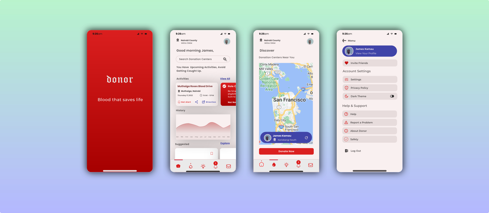

Mobile application
Researcher, Interaction and Visual Designer
Figma, Figjam, Adobe Illustrator,Framer
Sep 2022 - March 2023

Donor Mobile application is a conceptual project that we implemented as our final year project. We conceptualized our idea on how to improve healthy blood donation exercises; embarked on thorough Research, Design and later implementation of the idea.
According to World Health Organization and Emergency response Organizations such as the Red Cross, the global demand for a healthy blood exceeds supply. This means each country in the world has little amount of healthy blood in their blood banks. This means there is a shortage of regular blood donors.
People are not donating healthy blood. Similarly, those that participate in blood donation exercises do so for a short period and then they detarch from it.
In order to understand the blood donation exercise and challenge present, we took an initiative to participate in one exercise at Kisii university grounds in order to gather more insights.
Donors
Their main aim is to donate a healthy blood, get a donors card and be appreciated for donating.
Moderators
They offer guidance and education to donors about bloo donation. They also moderate the entire exercise ensuring donors meet particular requirements.
Campaigners
They organize blood donation exercise targeting more donors. Their goal is to popularise their exercise to reach more potential people for blood donation.
The following areas formed the basis of our design decisions and strategies.
There is limited awareness about blood donation. People fear blood donation by holding some native beliefs.
Most donors engage in the exercise because of mortivation from family and friends. If mortivation diminishes, so does the urge and need to donate again.
From other forms of donations, people come together to contribute when there is an urgent need. This is evident after crisis wher monitory donation tops the list followed by medical donations.
Business goal
Donors retention to ensure Frequent blood donation.
Users goal
Satisfaction and Karma reward. Feeling contented that what they have done is right and human.
Constraints
Our aim about this project was to achieve functionality, due to a tight development schedule.


Constant improvement of the product as we keep an eye on any available opportunity to market our idea lively, and ensure it become life changing.